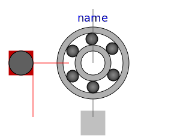

| Name | Description |
|---|---|
| Parameter record for friction losses | |
| Parameter record for brush losses | |
| Parameter record for stray load losses | |
| Parameter record for core losses | |
|
|
Parameter record for permanent magnet losses |
|  Friction | Model of angular velocity dependent friction losses |
| Loss models for induction machines | |
| Loss models for DC machines |